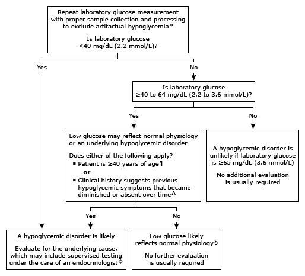

* Artifactual hypoglycemia can occur if an antiglycolytic agent (eg, fluoride) is not present in the blood collection tube and sample processing is delayed. Artifactual hypoglycemia also may be seen in individuals with leukocytosis, erythrocytosis, or hemolysis.
¶ A low glucose value is less likely to reflect normal physiology in individuals aged ≥40 years and usually warrants further evaluation.
Δ Individuals who report the loss of a symptomatic response to hypoglycemia over time should undergo additional evaluation as this history could reflect the evolution of impaired awareness of hypoglycemia that can occur with recurrent episodes of hypoglycemia.
◊ Supervised testing can entail a supervised fast or mixed meal test, or evaluation may be performed during a spontaneous episode of hypoglycemia. Selection of a supervised test when hypoglycemia is not fortuitously observed depends on the timing of symptoms in relation to meals. These options are reviewed in detail in other UpToDate content.
§ In young (aged <40 years), healthy individuals, glucose values ≥40 to 64 mg/dL (2.2 to 3.6 mmol/L) can reflect normal physiology in the fasting state.